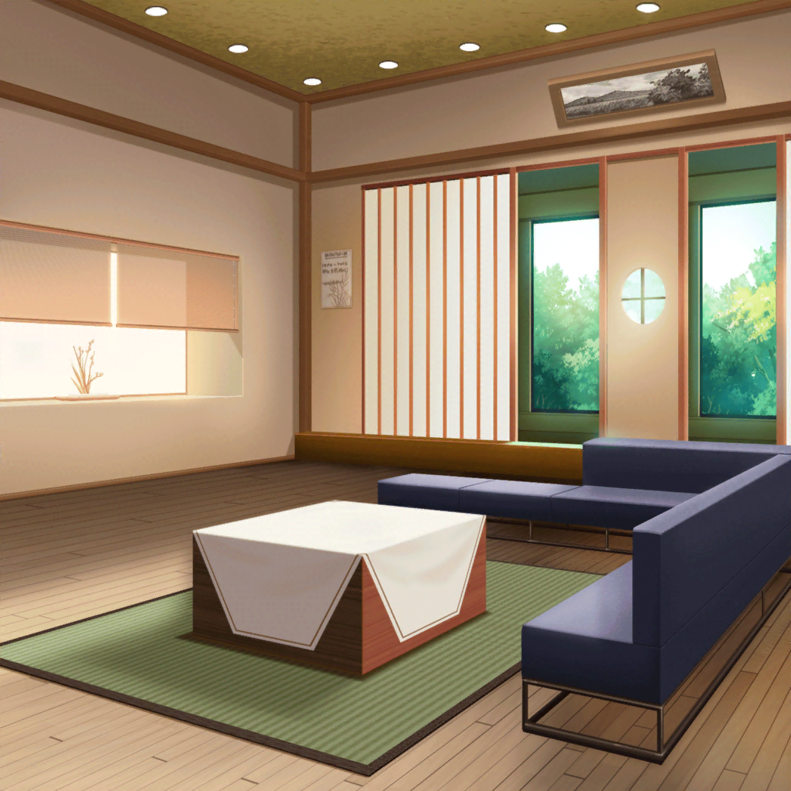

数日後
美竹家 リビング
蘭
……
蘭
『本当の声、届けたい』……
蘭
できた……！
蘭
もしもし？ あー、モカ？ いいタイミング。
ちょうど今、新曲ができたんだ
蘭
……今、聴かせろって？ やだよ。
明日のお楽しみ
蘭
うん、うん……わかった。じゃあ、また明日
蘭
（……この曲はみんなにも、父さんにも聞いてほしい）
蘭
（あたしの気持ちを、届けたい……
その為に、あたしは全力でやるだけ）

翌日
スタジオ
ひまり
よーっし、今日も練習はじめよー！
つぐみ
今日は、どの曲から練習しようか？
蘭
新曲、作ってきたんだけど……
巴
へえ……聴かせてくれるか？
蘭
……うん。聞いて
蘭
どうだった……？
一同
……
蘭
ダメ、だった……？
つぐみ
そ、そんなことないよ！ すごく……すごくよかったよ……！
モカ
なんか、蘭っぽくない歌詞だよねえ
巴
確かに、今までの蘭の書く歌詞とはちょっと雰囲気が違うな。
こう、素直っていうか……
蘭
わ、悪い……？
モカ
悪いなんて言ってないよー？
こんな歌詞が書けるようになったなんて、
大人になったじゃん、蘭～？ あたしはこの曲、好きだしー
蘭
この曲を、ライブでやりたいって思ってる。
急かもしれないけど……どうかな
つぐみ
わあ……！ 素敵なアイディアだと思う！ いいねえ！
巴
とはいえ、ライブまであと１週間……か。
今からアレンジして、仕上げまで考えるとけっこうギリギリだな
ひまり
セットリストも新しく考えなおさないと……
つぐみ
そっか……今からじゃ難しい、かな……
蘭
……難しいことだっていうのはわかってる。
……でも、それでもあたしはこの曲をやりたい。
この曲であたしの……ううん、あたし達の本気を見せたいの！
ひまり
蘭……
蘭
あたしは今までいろんなことから逃げてきた。
父さんからも……それから、みんなからも
蘭
だけどこの間、みんなとケンカして、ぶつかって……
はじめて逃げないでみんなと向き合えた気がした。
ま、めちゃくちゃくだらない口喧嘩だったけどね
蘭
逃げないで向き合うことは、すごく怖かったけど……
同時に、あたしにぶつかってきてくれたみんなが、
どれだけ大事な存在かってわかった
蘭
だからこそ……この５人で、この曲で父さんに
その思いをぶつけたいの……ワガママな自覚は、ある
巴
お互いのことを大切に思ってるのはみんなそうだよ。
だから、蘭の気持ちはワガママなんかじゃない
モカ
てか、蘭のワガママなんか今にはじまったことじゃないし～？
いまさらだよ～
ひまり
も、モカ！
それはシーッ！ だよ！
蘭
……
ひまり
あっ……な、なんでもなーい！
つぐみ
と、とにかく……！
ライブに向けてこの曲も練習、はじめようよ！
ねっ、蘭ちゃん！
モカ
しょーがないから蘭がその気ならあたしもやっちゃうよー。
ちょーエモいモカちゃんを見せてあげよう
つぐみ
うんっ！ やろう！
みんなでがんばろうよっ！
巴
ああ。やってやろうぜ！
ひまり
ん～～～～！！！ 燃えてきた！
これから１週間、忙しくなるぞ～～！！
モカ
つぐはあんまりツグりすぎちゃダメだからね～？
つぐみ
えっ！？ つ、ツグる……？
蘭
モカはもっとツグりなよ
モカ
よっしゃー。ツグってこー
ひまり
……何？ 何の話？
巴
さあな？
……ま、いつもの２人ってカンジだな
蘭
２人共。さっそくアレンジのことについて話したいんだけど
巴
OK。
もう１度頭のフレーズを聴かせてくれないか
蘭
わかった
ひまり
（ライブまであと１週間……やっとみんなが１つになれた。
これならきっと、成功できる気がする！）